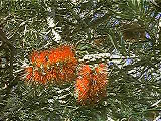

Hojas de 2,5-11 cm x 4-10 mm, alternas, cortamente pecioladas, gruesas, rígidas, de color verde oscuro, de lineares a elípticas, de ápice con punta estrecha, con nerviación y márgenes prominentes y abundantes glándulas esenciales.
Inflorescencias de 5-15 x 2,5-7 cm, en espigas densas, con ejes pelosos.
Flores hermafroditas, actinomorfas, con 5 sépalos y 5 pétalos verdosos; filamentos libres, de alrededor de 2-2,5 cm de longitud, de color rojo brillante, con anteras amarillas; estilo ligeramente más largo que los estambres.
Fruto de 5,5-7 (10) mm de diámetro, tipo cápsula, cupuliforme, serotino (permanece sobre la rama durante mucho tiempo).
Florece a mediados de primavera-verano

Foto: Carlos Romero Zarco

Detalle con inflorescencias e infrutescencia del año anterior
Foto: Carlos Romero Zarco
Observaciones:
El nombre
genérico se compone de los términos griegos kallos =
bello y stemon = estambre, refiriéndose al vistoso colorido de
los estambres.
El nombre popular lo recibe por el parecido de sus inflorescencias con un limpiatubos.
Los callistemon fueron introducidos por primera vez en Europa como plantas ornamentales por Joseph Banks en 1789.
Callistemon speciosus tiene aplicaciones terapéuticas semejantes a las de Eucaliptus globulus, como broncodilatador, expectorante y antiséptico.
El nombre popular lo recibe por el parecido de sus inflorescencias con un limpiatubos.
Los callistemon fueron introducidos por primera vez en Europa como plantas ornamentales por Joseph Banks en 1789.
Callistemon speciosus tiene aplicaciones terapéuticas semejantes a las de Eucaliptus globulus, como broncodilatador, expectorante y antiséptico.